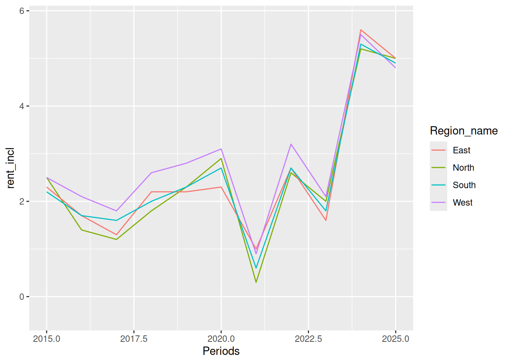
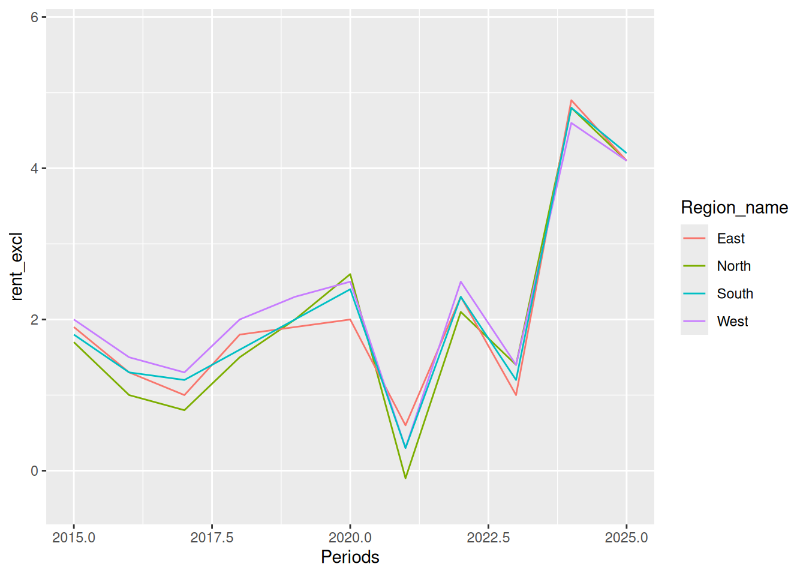

proximity_clean <- proximity|>
separate_wider_delim(
Periods,
delim = "JJ",
names = c("Periods","Rest")) |>
mutate(Periods = as.numeric(Periods)) |>
select(!Rest)Dutch Rent Analysis
Research question
Housing has become a severe problem in many countries. Young people who have not yet been able to buy a home depend on renting, and the shortage of housing is hurting them badly. At its core, this is a simple supply-demand problem: high demand and not enough supply. Yet a simple supply-demand mechanism is not the only explanation for rent prices. If they could, every home would cost the same to rent, which is clearly not the case. Location matters. The quality of life in an area depends on how close residents are to certain infrastructure, and living in a remote town is usually cheaper than living in a central city.
This raises two questions: which infrastructure drives housing costs, and do some types matter more than others? We use the Netherlands as a case study. This project analyses rent increases in 10 years time (2015-2025) relate to the distance to different types of infrastructure across 12 Dutch regions.
Data description
The source of the datasets is CBS Open data Statline, the database of the Statistics Netherlands. This is an independent government institution that is responsible for gathering and publishing various official statistics about the Netherlands.
The dataset on rent increase per region covers the periods from 2015 to 2026 and describes the average rent increase across the country, regions and provinces, both including and excluding harmonization. It includes the rent increase of regulated, mid-tier and liberalised dwellings. The rent increase is defined as the average change in rental prices over a year, with the maximum permitted rent increase determined by the dutch government.
The rent harmonization allows the rent to be increased higher than the maximum rent increase valid for that year when there is a change in tenancy. This is meant to allow the property to be rented at its current rental value. The new rent is still limited by the maximum rent based on the Ministry of Interior and Kingdom Relations’ Rent Point System. This regulation targets situations in which, following a longterm lease, the previous rent is lower than the property’s current rental value due to the limit on rent increases during the previous tenancy. The regions are identified by region codes and stored as characters, whereas the other variables are stored as doubles. The dataset contains no missing values.
The dataset on proximity to facilities per region records the average distance for residents from their homes to different types of facilities over the period from 2006 to 2025. In addition to the distance variables, the data set also contains variables recording the number of facilities within a given radius. They are calculated as an average over all persons in an area. The data is given at the national, regional, provincial and municipal level.
All distances are calculated based on the shortest driving distance (by car). Variables describing the distance to a facility are given in kilometre and stored as a double data type. The variables indicating the number of facilities within a given radius is recorded as an average number and also stored as a double. The region codes are the same as in the rent dataset and also stored as characters. Depending on the variable there are many missing values or none at all. For example the distance to youth health care centre variable shows 95% NA, the variable Distance to School 56 (Distance to primary schools) shows no missing values at all. These differences in missing values were caused by changes in the recorded values per year. Data on youth health care centers were only recorded in the first year (2006) while others have been continuously added to until now.
Data sources:
Dataset cleaning
Periods is stored as character in the raw data because each value carries a “JJ” suffix (e.g. “2019JJ”). Here Periods is converted to numeric while eliminating the “JJ” suffix behind the according year.
rent_clean <- rent |>
separate_wider_delim(
Periods,
delim = "JJ",
names = c("Periods","Rest")) |>
mutate(Periods = as.numeric(Periods)) |>
select(!Rest)Individual Dataset Descriptives
Rent Dataset
The rent dataset has 252 rows and 5 columns.
| Number of Regions | Time Periods | Years |
|---|---|---|
| 21 | 12 | 2015- 2026 |
| statistic | rent_incl | rent_excl |
|---|---|---|
| mean | 2.77 | 2.24 |
| sd | 1.39 | 1.29 |
| min | 0.30 | -0.10 |
| max | 5.60 | 4.90 |
Proximity Dataset
The proximity to facilities dataset has 340 rows and 128 columns.
| Number of Regions | Time Periods | Years |
|---|---|---|
| 21 | 20 | 2006- 2025 |
| Health & Wellbeing | Retail | Hospitality | Childcare | Education | Green Areas | Transport | Leisure & Culture | Fire Stations |
|---|---|---|---|---|---|---|---|---|
| 3.638375 | 1.6896514 | 1.4893791 | 0.9433007 | 2.5747059 | 1.4584967 | 3.8751625 | 8.3327263 | 2.2721569 |
Joined Dataset
proximity_rent <- proximity_clean |>
inner_join(rent_clean, by=join_by(Regions, Periods))The two datasets are joined using inner_join(), and joined by Regions and Periods. Since for each region in the proximity dataset there are multiple periods of observations, both variables are necessary to identify the matching observation of the same region and period in the rent dataset.
Computing means of variable groups and renaming
Measured variables and Region Codes will be renamed in the joined dataset for better documentation in the following analysis
Renaming regions
Changing region codes to names for better readability in the following analysis.
region_labels <- tibble(
Regions = c("N01","LD01", "LD02","LD03","LD04"),
Region_name = c("Total country", "North", "East", "West","South")
)
proximity_rent <- proximity_rent |>
left_join(region_labels, join_by(Regions))Variable Description
| Variable | Description |
|---|---|
| rent_excl | Rent increase excluding harmonization only takes into account rents being increased by regular annual adjustments. |
| rent_incl | Rent increase including harmonization is the regular annual rent adjustments plus the extra rise in rent for new tenants. |
| health | Average distance for all residents in an area to rhe nearest health facilities, calculated by road (in km). |
| retail | Average distance for all residents in an area to the nearest large supermarket and daily food and department stores, calculated by road (in km). |
| hosp | Average distance for all resident in an area to the nearest hospitality like hotels/hostels, cafeterias, restaurants, calculated by road (in km). |
| childcare | Average distance for all residents in an area to the nearest daycare, calculated by road (in km). |
| educ | Average distance for all residents in an area to the nearest school, calculated by road (in km). |
| green | Average distance for all residents in an area to the nearest public green area and inland waters, calculated by road (in km). |
| trans | Average distance for all residents in an area to the nearest main road, train station, calculated by road (in km). |
| leisure | Average distance for all resident in an area to the nearest public library, festival, museums, etc., calculated by road (in km). |
Research Question
Main Variable: Rent
Graphical Representation
Subset of Regions: NL01 - country, LD01 - North, LD02 - East, LD03 - West, LD04 - South
Rent increase incl. Harmonization

Rent increase excl. Harmonization
